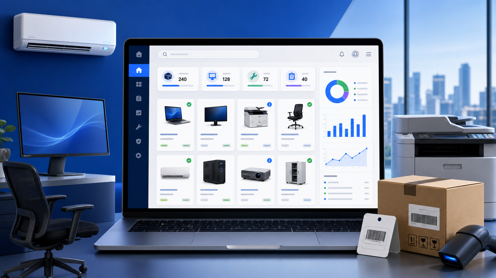

จัดการข้อมูลครบวงจร
เพิ่ม แก้ไข ค้นหา และลบข้อมูล พร้อมรายละเอียดทะเบียน รหัส จำนวน ราคา และสถานที่เก็บ
จัดเก็บ ค้นหา ตรวจสอบ และติดตามข้อมูลครุภัณฑ์ พร้อมรูปภาพและการกำหนดสิทธิ์ผู้ใช้งาน
เว็บแอปสำหรับบริหารข้อมูลครุภัณฑ์ พัฒนาด้วย Google Apps Script เชื่อมต่อ Google Sheets เป็นฐานข้อมูล และ Google Drive สำหรับจัดเก็บรูปภาพ ผู้ใช้สามารถแยกข้อมูลตามหมวดงาน ค้นหารายการ ตรวจสอบสถานะ และดูรายละเอียดครุภัณฑ์จากโทรศัพท์หรือคอมพิวเตอร์ได้
ไฟล์ประกอบด้วยโค้ด Google Apps Script และหน้าเว็บสำหรับนำไปติดตั้ง
เปิดลิงก์ดาวน์โหลด
เพิ่ม แก้ไข ค้นหา และลบข้อมูล พร้อมรายละเอียดทะเบียน รหัส จำนวน ราคา และสถานที่เก็บ
ย่อขนาดภาพก่อนอัปโหลด จัดเก็บใน Google Drive และเปิดดูภาพขนาดใหญ่ได้
แสดงสถานะยังไม่ตรวจ ตรวจแล้ว หรือจำหน่าย ช่วยติดตามงานตรวจครุภัณฑ์ได้ชัดเจน
ค้นหาจากชื่อ รหัส ทะเบียน หมวด และหมายเหตุ พร้อมค้นหาเฉพาะหมวดที่เลือก
รองรับบทบาท Admin, Editor และ Viewer เพื่อควบคุมการดู แก้ไข และลบข้อมูล
จัดเก็บ Audit Log เมื่อสร้าง แก้ไข ลบ เพิ่มหมวด หรือปรับปรุงรูปภาพ
แสดงลำดับการใช้งานตั้งแต่เข้าสู่ระบบ ไปจนถึงการประมวลผลและจัดเก็บข้อมูลบนบริการของ Google
ตรวจชื่อผู้ใช้ รหัสผ่าน และบทบาท
เลือกกลุ่มงานหรือค้นหาทุกหมวด
เพิ่ม ดู แก้ไข ค้นหา หรือลบรายการ
Admin, Editor และ Viewer
Backend
ตรวจสอบข้อมูลและประมวลผลคำสั่ง
Users, Settings และ Assets
จัดเก็บและบีบอัดรูปภาพ
บันทึกผู้ใช้และประวัติรายการ
ประมวลผลฝั่งเซิร์ฟเวอร์และเผยแพร่เป็น Web App
จัดเก็บข้อมูลผู้ใช้ รายการครุภัณฑ์ การตั้งค่า ประวัติ และรูปภาพ
สร้างหน้าใช้งานแบบ Responsive เหมาะกับมือถือและคอมพิวเตอร์
Users: ชื่อผู้ใช้ รหัสผ่าน และบทบาท
Settings: รายชื่อหมวดหรือโหมดงาน
Assets: รายละเอียดครุภัณฑ์และลิงก์รูปภาพ
AuditLogs: วันเวลา ผู้ใช้ และรายละเอียดการทำรายการ
ขั้นตอนสำหรับนำโค้ดไปติดตั้งบน Google Apps Script และเตรียมระบบให้พร้อมใช้งาน
Code.gsIndex แล้ววางโค้ดหน้าเว็บแก้ค่า FOLDER_ID ใน Code.gs ให้เป็น Folder ID ที่เตรียมไว้ และตรวจสิทธิ์ของบัญชีผู้ติดตั้ง
เรียกใช้ฟังก์ชัน setupSheets() หนึ่งครั้ง เพื่อตั้งหัวตาราง Users, Settings, Assets และ AuditLogs